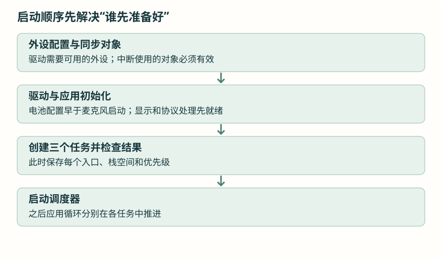

接回手表：三个任务怎样组成一个系统
把前面分开学习的创建、等待、通知和存储放回实际项目。沿启动顺序和数据流读当前代码，明确每项任务负责什么，再说明哪些地方需要通过运行观察验证。
1 · 从第一章的主循环，走到现在的分工
第一章已经完成驱动与裸机综合：中断提示事件，DMA 持续采集，主循环读取、计算、显示、通信。进入 FreeRTOS 后，驱动本身仍然负责相同的外设操作，变化在于哪些工作在哪个任务中执行，以及没事时怎样等待。
| 工作 | 裸机教学程序 | 当前 FreeRTOS 项目 |
|---|---|---|
| 两颗 IIC 传感器 | 主循环看到水印标志后读取 | Sensor_Task 等待信号量，取得后联合读取。 |
| 声音检测 | 主循环读取一份稳定声音帧 | Mic_Task 等待事件，使用自己的声音通道。 |
| 关键词识别 | 裸机篇没有把多使用者展开 | TaskKWS 使用独立消费通道，并累积自己的声音窗口。 |
| 界面、协议处理 | 每轮主循环推进 | 集中在 Sensor_Task 中周期性获得执行机会。 |
按当前 main.c 的实际创建代码辨认任务。App/task_imu.c、task_ppg.c 等旧拆分文件不能只凭文件名就当成当前运行架构。函数存在和任务被创建是两回事。
2 · 先准备资源，再让使用者开始运行
沿 main() 依次看：芯片与时钟初始化；GPIO、DMA、IIC、ADC、串口、SPI 初始化；实时时钟初始化；创建声音事件组和传感器信号量；初始化传感器；配置电池采集；启动并校准麦克风；初始化应用和无线串口处理；最后创建三个任务并启动调度器。

为什么电池在麦克风之前？它们共用 ADC，注入通道相关配置应在常规 DMA 转换开始前完成。为什么光学采集在决策树上传之后开始？上传需要时间，过早开始会让光学缓冲在任务开始接走数据前积满。这些外设依赖在第一章已有解释，现在仍然成立。
仓库有启动阶段的特定校准流程，不能把某段代码脱离启动环境单独搬走。新增中断来源时，要逐一确认回调什么时候可能发生、对象是否已创建、当时能使用哪些内核接口。
3 · 传感器任务：事件来了读取，超时也维护
先看 xSemaphoreTake(..., 30 毫秒)。得到事件才读取传感器批次；无论得到还是超时，都继续执行应用和通信维护。
- 从运动传感器读最多 26 组，检查实际返回数量。
- 完整运动批次时，读取光学实际样本数，再按已有方法把运动数据重采样为 25 组。
- 将运动和光学数据分别交给对应算法，光学循环以实际读到的数量为边界。
- 推进界面、蓝牙串口解析和其他周期维护，再回到等待。
这里没有新建“屏幕任务”“每个算法一个任务”。同一任务内的普通函数调用仍然按顺序执行，它们之间也会互相影响耗时。30 毫秒等待上限不代表界面必然每 30 毫秒完成一次维护，执行算法和通信的时间还要计入。
SensorTask 的任务优先级为 2，声音两个任务为 1。这个数值说明它就绪时优先执行，不能用“优先级更高”替代对最长处理时间的测量。
4 · 两个声音任务：共用采集，各自推进
声音 DMA 不依赖任务每轮主动采一次。中断回调取得已完成半区，驱动准备各自的帧并通过事件组提示。Mic_Task 判断声音强弱后向应用提交结果；TaskKWS 获取自己的帧、累积窗口，再做关键词识别。
关键词任务启动时有模型初始化和一次延时，随后激活关键词消费通道。延时本身只保证经过一段等待，并不是“另一个任务初始化完成”的可靠证明；当前真正要对齐的是麦克风在创建任务前已经完成驱动初始化，以及通道激活、可读状态的检查。以后若把初始化移进其他任务，应建立明确的就绪通知。
两个声音任务共用优先级 1，但不能据此保证各占一半处理器时间。谁阻塞、谁执行多久、是否有更高优先级工作，都会影响运行。声音片段是否连续，应结合各自消费速度和有限缓冲验证。
5 · 为什么没有每个功能都建一个任务？
建任务意味着新栈、新调度关系，以及可能新增的数据交接。能在同一执行流程中顺序完成、使用同一份数据的工作，可以先放在一起。需要独立等待、具有不同处理时限，或不能被另一项较长工作挡住时，再评估拆分。
| 考虑的问题 | 放回当前手表 |
|---|---|
| 怎样被触发？ | 传感器水印与声音帧来自不同事件。 |
| 允许等多久？ | 声音缓冲覆盖期限、传感器积压和界面响应需要分别核对。 |
| 数据由谁保存？ | 传感器批次数组、声音私有帧、关键词累积数组。 |
| 共享什么资源？ | IIC 和界面集中调用；跨任务结果需要明确读写关系。 |
| 独立任务有什么代价？ | 任务栈、对象分配、调度与数据交接复杂度。 |
这些问题比先列“采集任务、计算任务、显示任务、发送任务”的名字更有用。实际运行遇到瓶颈后，再以处理时间和等待关系决定是否拆分。
6 · 怎样知道整套系统没有漏掉工作？
选择能覆盖最重路径的运行场景：传感器持续出数据、界面刷新、声音识别和无线收发同时工作。先用调试观察量记录每项任务是否持续前进，再统计处理时间、缓冲积压、读取实际样本数和对象提交失败次数。
同时检查内核池最低余量和各任务栈水位。串口打印本身会增加耗时，尤其不要把大量日志混入协议串口。需要精确时间测量时，可用独立调试引脚和逻辑分析仪观察进入、退出。
看门狗若已启用，要确认健康判断能覆盖真正需要检查的工作，不能只因某一个任务仍在运行就认为整个系统健康。低功耗也要在任务等待正确、事件恢复正确之后观察，不能把空转造成的高占用误认为器件本身不省电。
能够从启动入口找到三个真实任务，解释它们何时就绪、等什么、读哪份数据、何时归还空间；能够发现创建失败、任务饥饿和缓冲积压。至此，多任务程序的执行关系已经闭环，后续再沿显示、手机应用和 AI 支线继续扩展。
资料与源码
本章按仓库当前 FreeRTOS V11.2.0 与 STM32U5 端口核对接口。图解描述执行关系，任务耗时和硬件行为需在实际工程观察。